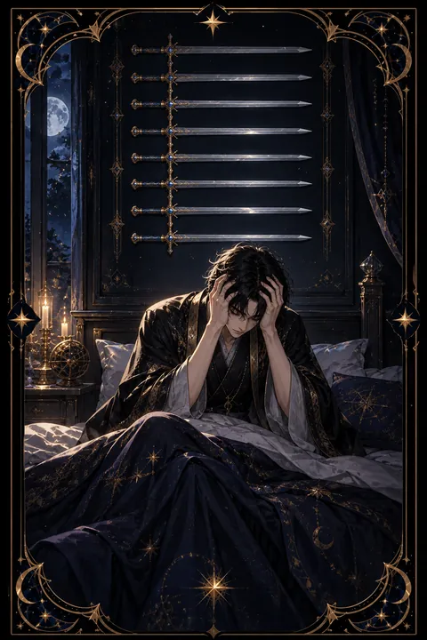

이 게시물은 쿠팡 파트너스 활동의 일환으로, 이에 따른 일정액의 수수료를 제공받습니다.


검 9 카드 — 밤을 삼키는 걱정
검 9 카드 한눈에 보기
검 9 카드 상징 읽기

동네보살의 카드 그림은 전통 라이더–웨이트 덱의 뜻을 새 그림으로 옮긴 것입니다. 아래 상징 설명은 전통 덱의 그림을 기준으로 합니다.
검 9에는 한밤중 침대에서 상체를 일으켜 두 손으로 얼굴을 감싼 인물이 등장합니다. 잠에서 깬 채 걱정과 후회에 사로잡힌 모습으로 불안이 가장 커지는 시간을 표현합니다.
검은 벽에는 아홉 자루의 검이 가로로 나란히 걸려 있습니다. 검은 인물을 향하지 않고 몸에 닿지도 않습니다. 고통이 실제 사건보다 머릿속 생각에서 더 크게 자라고 있다는 점을 보여 주는 핵심 상징입니다.
이불에는 붉은 장미와 별자리 기호가 번갈아 수놓여 있습니다. 어두운 밤에도 삶의 아름다움과 우주의 질서는 그대로 있다는 뜻입니다. 침대 옆면에는 한 사람이 다른 사람을 쓰러뜨리는 조각이 새겨져 있어 과거의 상처나 패배감이 꿈속까지 따라오는 모습을 나타냅니다. 인물이 입은 흰 잠옷은 아직 순수한 마음을 잃지 않았다는 점도 함께 보여 줍니다.
검 9 카드 정방향 뜻
정방향 검 9는 걱정과 불안이 마음을 짓누르는 시기를 뜻합니다. 밤이 되면 지난 실수가 떠오르고 앞으로 일어날지 모를 일이 두려워 잠을 설치기 쉽습니다. 죄책감이나 자책이 반복되며 스스로를 몰아세우는 경우도 많습니다.
하지만 이 카드의 검은 벽에 걸려 있을 뿐 인물을 해치지 않습니다. 느끼는 고통은 진짜지만 그 크기는 실제 상황보다 부풀려져 있을 가능성이 큽니다. 걱정을 머릿속에서만 굴리지 말고 글로 적어 보면 해결할 수 있는 문제와 그렇지 않은 문제가 나뉩니다.
혼자 견디려 하기보다 믿을 만한 사람에게 이야기하는 것이 좋습니다. 수면 습관을 정돈하고 중요한 결정은 밤이 아닌 낮에 내리는 편이 낫습니다. 불안이 오래 이어져 일상이 힘들다면 전문 상담의 도움을 받는 것도 좋은 선택입니다.
검 9 카드 역방향 뜻
역방향 검 9는 긴 불안의 밤이 서서히 끝나 가는 흐름입니다. 걱정하던 일이 생각만큼 나쁘지 않았다는 것을 확인하거나 누군가에게 속마음을 털어놓으며 마음의 짐을 덜게 됩니다. 스스로를 향한 비난을 멈추고 조금 더 너그러운 시선으로 자신을 바라보기 시작합니다.
한편 이 카드는 걱정을 드러내지 못하고 안으로만 삼키는 상태를 가리키기도 합니다. 남들 앞에서는 멀쩡해 보여도 속으로는 불안이 깊어지고 있다면 이제는 표현할 때라는 신호입니다.
어느 쪽이든 핵심은 혼자 버티지 않는 것입니다. 가까운 사람과 대화하거나 일상의 리듬을 되찾는 작은 습관부터 시작해 보세요. 창밖이 밝아 오듯 마음에도 빛이 들어올 여지가 충분히 남아 있습니다. 잠들기 전 짧은 산책이나 가벼운 기록처럼 마음을 비우는 습관도 도움이 됩니다.
연애에서 검 9 카드
솔로라면 과거의 상처나 거절의 기억 때문에 새로운 만남을 두려워할 수 있습니다. 좋은 사람을 만나도 결국 실망할 거라는 생각이 먼저 들어 마음을 열지 못하는 흐름입니다. 지난 인연에서 배운 점을 정리해 두면 같은 걱정에 덜 흔들립니다.
만나는 사람이 있다면 상대의 마음을 의심하거나 관계가 끝날까 봐 혼자 불안해하는 모습일 수 있습니다. 상대의 짧은 답장이나 표정 하나를 밤새 해석하며 마음을 소모하기 쉽습니다. 확인되지 않은 추측은 대화를 통해 풀어야 합니다. 감정을 비난이 아닌 부탁의 형태로 전하면 상대도 편안하게 답할 수 있습니다. 걱정을 털어놓는 순간 관계가 오히려 가까워지는 경험을 하게 될 수도 있습니다. 불안한 마음이 들 때마다 상대에게 확인을 요구하기보다 스스로를 안심시키는 방법을 하나 마련해 두는 것도 좋습니다.
재회·속마음 질문에서 검 9 카드
재회 질문에서 검 9는 헤어진 뒤의 후회와 그리움이 밤마다 마음을 괴롭히는 상태를 보여 줍니다. 그때 다르게 했다면 어땠을까 하는 생각이 반복되며 스스로를 탓하기 쉽습니다. 지금은 연락 여부를 결정하기 전에 불안한 마음부터 가라앉히는 것이 우선입니다. 감정이 가장 흔들리는 밤에 보내는 메시지는 후회로 남을 가능성이 큽니다. 마음을 정리한 뒤 낮에 차분한 상태로 판단해 보세요. 상대의 마음은 추측이 아니라 실제 반응으로 확인하는 것이 좋습니다. 지난 관계를 떠올릴 때 좋은 기억과 힘들었던 기억을 함께 적어 보면 감정이 조금 더 균형을 찾습니다. 서두르지 않아도 흐름은 사라지지 않습니다.
일·금전에서 검 9 카드
일과 직장에서는 실수나 평가를 둘러싼 걱정이 커져 업무에 집중하기 어려운 시기입니다. 지나간 일을 되새기며 스스로를 몰아붙이기보다 지금 할 수 있는 수습 방법을 한 가지씩 실행하는 것이 좋습니다. 상사나 동료에게 상황을 먼저 공유하면 혼자 품던 부담이 크게 줄어듭니다. 퇴근 뒤까지 일 생각이 이어진다면 다음 날 할 일을 적어 두고 머리에서 내려놓는 연습을 해 보세요.
살림 쪽에서는 막연한 돈 걱정이 판단을 흐릴 수 있습니다. 불안할수록 수입과 지출과 갚아야 할 금액을 구체적인 숫자로 적어 보세요. 막연함이 줄어들면 현실적인 계획을 세울 여유가 생깁니다. 걱정거리를 숫자로 적어 보면 실제 위험이 얼마나 되는지 차분히 보입니다.
검 9 카드는 예일까 아니오일까
걱정과 불안이 판단을 흐리고 있어 지금은 원하는 답을 얻기 힘들다고 보아 아니오에 가깝습니다. 불안을 먼저 가라앉히고 사실을 확인한 뒤 다시 물으면 흐름이 달라질 수 있습니다.
자주 묻는 질문
검 9 카드 역방향은 나쁜 뜻인가요?
역방향 검 9는 긴 불안의 밤이 서서히 끝나 가는 흐름입니다. 걱정하던 일이 생각만큼 나쁘지 않았다는 것을 확인하거나 누군가에게 속마음을 털어놓으며 마음의 짐을 덜게 됩니다. 스스로를 향한 비난을 멈추고 조금 더 너그러운 시선으로 자신을 바라보기 시작합니다.
검 9 카드가 연애 질문에 나오면요?
솔로라면 과거의 상처나 거절의 기억 때문에 새로운 만남을 두려워할 수 있습니다. 좋은 사람을 만나도 결국 실망할 거라는 생각이 먼저 들어 마음을 열지 못하는 흐름입니다. 지난 인연에서 배운 점을 정리해 두면 같은 걱정에 덜 흔들립니다.
타로 카드는 어떻게 뽑나요?
타로 카드 페이지에서 78장을 섞으면 그중 22장이 펼쳐집니다. 마음이 가는 세 장을 고르면 과거·현재·미래 자리에 놓이고, 한 장씩 뒤집어 자리와 방향에 맞는 풀이를 읽습니다. 정방향과 역방향은 섞는 순간 정해집니다.